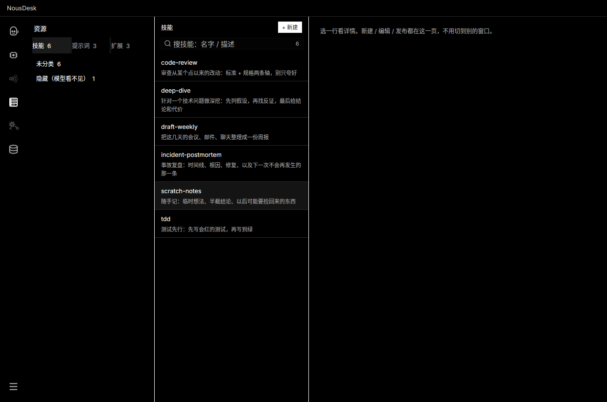

上一版是一行状态字，太像开发者工具。这一版换一套语法：hairline 三档浓度代替彩色、 9px 全大写 + 0.18em 字距当标签、数字一律 JBMono tabular、动效只动 1px 和浓度。 骨架和字号仍然照真机：rail 60 / 树 248 / 列表 300 / 详情，行 12.5/11/行高 16/padding 7·12。

/opt/NousDesk/target/debug/nousdesk 现在跑出来的样子（同一套种子数据）。
底部那一行现在是空的 —— 这份 demo 就是往那儿放东西。
01 铭牌、04 排印、06 刻度尺 是纯客户端、只要 status；
07 胶囊 要 remote（↗ 才有地址）；
11 层叠 得先有「仓库视图」才配得上那两张露边的卡（否则就是撒谎）。
14 号「跟段切换同排」我砍了 —— 和段按钮重复，属于删的那一类。
现成：GET /v1/repos/{skills,prompts,extend}/status →
{root, head, branch, ahead, behind, dirty, locked}。
待发布条数走清单的 tracked（客户端已有 pending_count），不再打一次 /pending。
缺：status 没有 remote（只有 presets 的 repo_view 带）。
所以带 ↗ 的那几套，要么内核补 remote（nous_repo::remote_url() 已写好），
要么改成页内仓库视图，要么就是退化态 A（键帽 + 本地路径）。